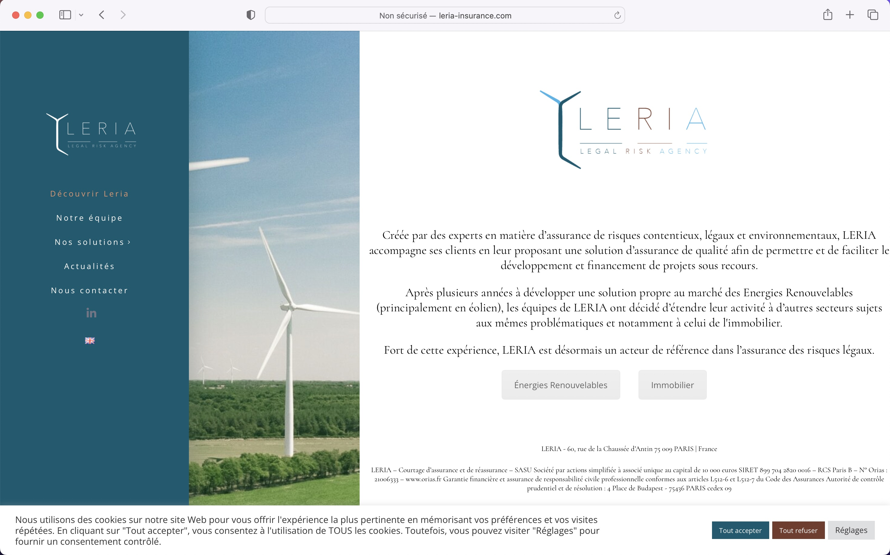

Le projet
Qu'est ce que LERIA ?
LERIA accompagne ses clients en leur proposant une solution d'assurance de qualité afin de faciliter
le
développement et le financement de projets soumis à des litiges.
J'ai pu suivre l'équipe tout au long du processus de création de l'entreprise, ce qui m'a
permis de mieux
comprendre leur offre et de déterminer le site le plus adapté à leurs besoins.
Quel est le but de ce site ?
étant donné que le secteur des risques légaux est très spécialisé
et basé sur le bouche-à-oreille,
l'objectif était de créer un site vitrine à partager avec les clients, mais surtout de
permettre aux membres
féminins de l'équipe de le partager avec leurs réseaux.
Avant d'avoir rejoins le projet, la conception du logo avait été
lancé et j'ai pu
le découvrir avec elle et découvrir en même temps les codes que j'allais derrière
appliquer au site.
Les Wireframes
Après avoir échangé avec l’équipe pour un peu plus
comprendre leur coeur de métier et comprendre ce qu’elle voulait présenter à leur
client, j’ai pu commencer à travailler de mon côté. Ce site à pour but
d’être un site vitrine et qui sera le support du lancement de LERIA. En effet, les filles de
l’équipe ont déjà leur propre réputation/client sur le marché des risques
légaux.
Le site
Pour ce projet, j’ai du mettre les mains dans le
cambouis et réaliser
le site sur Wordpress. J’ai décidé de partir avec une base et de trouver un template
compatible avec Wordpress. Avec les caractéristiques discutées avant et les wireframes et
contenus validé j’ai pu me mettre à chercher le template idéal.
L'interface du site
La page principale
La page se veut simple et épurée, présentant les informations sur l'offre LERIA, ainsi
que des appels à l'action directs vers les offres, en plus du menu.

La page présentation produit
La demande était la suivante : lire le texte de haut en bas et avoir la volonté de faire
défiler. La page devait être aérée et chaque fois que possible, nous avons choisi
d'utiliser des pictogrammes pour soulager la vue.
L'équipe
La demande était la suivante : lire le texte de haut en bas et avoir la volonté de faire
défiler. La page devait être aérée et chaque fois que possible, nous avons choisi
d'utiliser des pictogrammes pour soulager la vue.